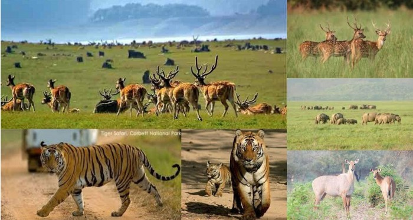
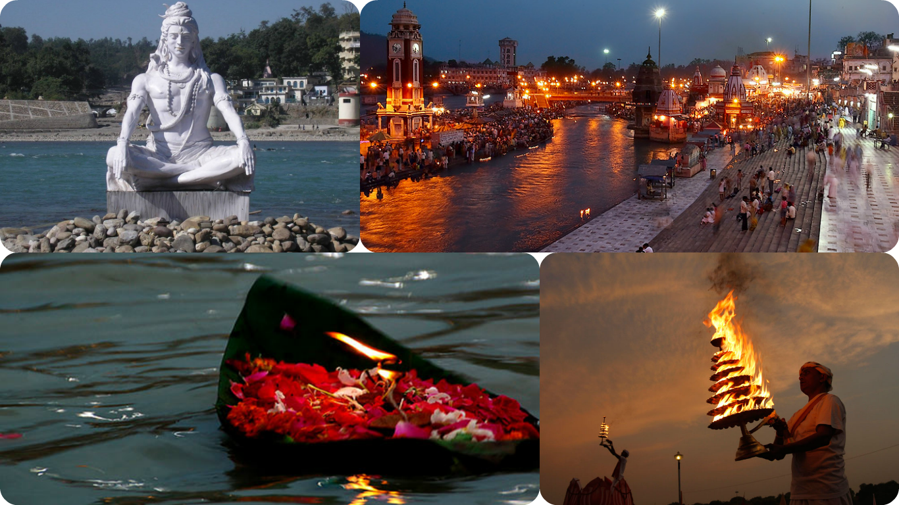

Welcome to Uttaranchal, Uttarakhand officially the State of Uttarakhand (Uttarākhaṇḍ Rājya), formerly known as Uttaranchal, is a state in the northern part of India. It is often referred to as the Devbhumi (literally "Land of the Gods") due to many Hindu temples and pilgrimage centres found throughout the state. Uttarakhand is known for the natural environment of the Himalayas, the Bhabhar and the Terai. On 9 November 2000, Uttarakhand became the 27th state of the Republic of India, being created from the Himalayan and adjoining northwestern districts of Uttar Pradesh. It borders Tibet to the north; the Mahakali Zone of the Far-Western Region, Nepal to the east; and the Indian states of Uttar Pradesh to the south and Himachal Pradesh to the west and north-west as well as Haryana on its south-western corner. The state is divided into two divisions, Garhwal and Kumaon, with a total of 13 districts. The interim capital of Uttarakhand is Dehradun, the largest city of the state, which is a railhead. The High Court of the state is located in Nainital.
Tours to Jim Corbett National Park
Jim Corbett National Park is the oldest national park in India and was established in 1936 as Hailey National Park to protect the endangered Bengal tiger. It is located in Nainital district of Uttarakhand and was named after Jim Corbett who played a key role in its establishment. The park was the first to come under the Project Tiger initiative. The park has sub-Himalayan belt geographical and ecological characteristics.An ecotourism destination, it contains 488 different species of plants and a diverse variety of fauna. The increase in tourist activities, among other problems, continues to present a serious challenge to the park's ecological balance.
Tours to Haridwar-Rishikesh
Haridwar is district of Uttarakhand state in India. Haridwar is place where the river Ganges enters in plain areas north India after flowing 250 kms from its origin Gaumukh (Gangotri Glacier). Haridwar is the place where people from across the India visit for pilgrimage and to take a holy dip into the holy river Ganges. Haridwar city is an ancient and it is one of the most sacred cities in India. The diverse nature of the Hindu religion has attracted foreign visitors from all around the world. Foreigners always attracted to Haridwar because here they can closely experience India's complex culture, various Hindu rituals and the ancient civilization. Rishikesh is one of the most holy cities in India. It is to be found in the Dehradun district of Uttarakhand. Rishikesh sightseeing includes visiting famous the places in and around Rishikesh.Holy city of Rishikesh in Uttarakhand is home to various tourist attractions. A place where divinity and nature combine and give the choicest of experiences, it seeks to be a perfect abode for people seeking piety, tranquility and wisdom. Rishikesh is the ideal base camp for exploring the majesty of the mountains and conquering the torrents of the river. Spiritual pursuits and adventurous quests form an important part of its traveler influx. Listed below are some places to be included in sightseeing tours of Rishikesh.